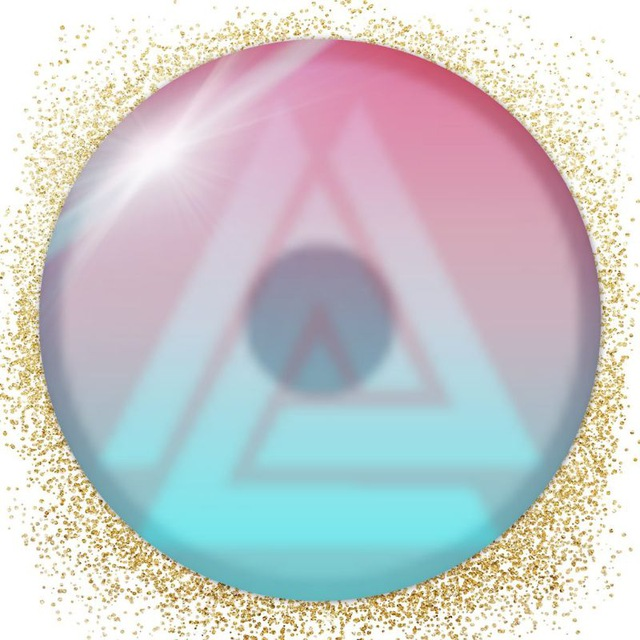

Здесь представлено описание мода Hydra mega 1.2.5 ALPHA:
- Мод созданный мной(KIRA)
- голубой интерфейс
- наличие русского языка
- уменьшенный вес игры,
- исправленный перевод редактора
- полный перевод
- 127 модулей
- 16 сигнальных веществ
- градиенты везде
- real lab с маленькими ядрами
- полное изменение шейдеров
- фаст анлок
- и многое другое